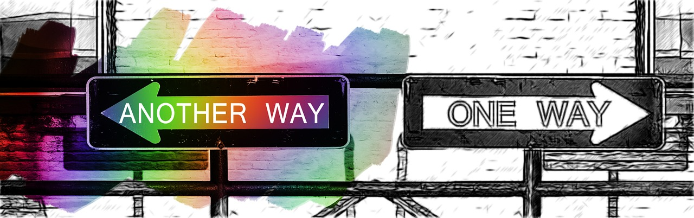

さて、今回はアイディアの創出方法第二弾として、私が普段から無意識的に利用している方法をご紹介します。
その名も、「MECE発想法」なのですが、この方法はそこそこ有名だったりしますので、ご存知の方もいらっしゃるかもしれません。MECEという言葉は、’Mutual Exclusive and Collectively Exhaustive’の略なのですが、日本語訳すると、「ダブりなく、抜け漏れなく」考える発想法といったところでしょうか。
何かしら大きい枠組みで物事を考える時、この「ダブりなく、抜け漏れなく」考えることは意識しないと意外に難しいです。簡単な例を出すと、今考えている起業のネタを分類しようとする時に、’BtoC（Business to Consumer）’なのか’BtoB（Business to Business）’なのかという分類だけを考えるだけでは不十分で、この場合は’CtoC（Consumer to Consumer）’または、必要によっては’CtoB（Consumer to Business）’なのかという分類も入れて初めて、トータルでMECEに自社のビジネスモデルを考察できている、ということになります。おそらく、’CtoB’などはあまり一般的では無いので、このようなビジネスを考察すること自体少ないかと思いますが、たとえ小さいアイディアだとしても抜け漏れがあっては折角のチャンスも無くなってしまいます。
もう少しわかりやすく説明させていただくために、インターネット上の具体的な売買プラットフォームを例にとってみましょう。Amazonのサービスは主に中小小売店（Business）から一般消費者（Consumer）に物品を売買しているので’BtoC’型、有名なアスクルや、最近コマーシャルでよく見るミスミといった会社が提供しているサービスは法人どうしの物品売買の場となっているので’BtoB型’、これまた最近流行りのメルカリなどは一般消費者どうしの売買プラットフォームなので’CtoC’型と言えます。
では’CtoB’型は？というと、まだメジャープレーヤはいないかもしれませんね。ただ、Youtubeなどは数多いるYoutuber目線から考えると’CtoB’型と言えるかもしれません。YoutuberはコンテンツをYoutubeに売り、その対価として報酬を得ている、とある意味で言えそうです。ただ、この場合もYoutubeのその先の法人（Businessサイド）にコンテンツをYoutuberが販売しているわけでは無いので、少し違うかもしれません。
何かビジネスを考える時、「何を誰に売るのか？」という問題は初歩的かつ最も重要なテーマではありますが、この時にこのMECEで物事を考えるクセがついていれば、ありとあらゆる可能性を逃さなくなるのでは、と感じます。
個人的には、そもそものインターネットの特性と、時代の流れを考えると、’CtoB’型のプラットフォームがもっといろいろな形で出てきてもいいのかな、と思っており、そちらのサービス開発も考えていこうかと思っています。まだ頭の中で漠然としているので、もう少し考えが固まったらブログで紹介させていただきますね。
以上、アイディアの発想法として参考になれば幸いです。